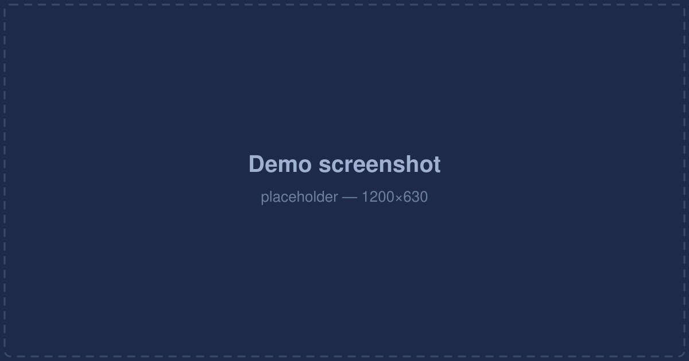

A Python library for implementing convenient resumable download functionality.
便于使用的断点续传下载库
PyURLFetch is a Python library for resumable downloads. It was extracted from MacWave's package download flow, so it handles the parts that are easy to get wrong: partial files, HTTP Range requests, rate limiting, proxies, and retry policy.
PyURLFetch 是一个用于断点续传下载的 Python 库。它从 MacWave 的软件包下载流程中抽取而来，因此把那些容易出错的部分都处理好了：分片文件、HTTP Range 请求、限速、代理与重试策略。
Python 3.8 and above. The optional progress bar needs rich 12.0 or above.
Python 3.8 及以上。可选的进度条需要 rich 12.0 及以上。
In the terminal, run:
在终端中运行：
$ pip3 install PyURLFetch
To install with the progress bar, run:
如需安装进度条，运行：
$ pip3 install "PyURLFetch[progress]"
The distribution name is PyURLFetch, but the module you import is pyurlfetch.
发行名是 PyURLFetch，而导入的模块名是 pyurlfetch。
from pyurlfetch import download_file
path = download_file(
"https://example.com/archive.tar.gz",
"archive.tar.gz",
resume=True,
limit_rate="1M",
)
print(path)
The download is written to archive.tar.gz.partial and renamed to the target once complete, so an interrupted download can be resumed by calling the same function again with resume=True.
下载内容先写入 archive.tar.gz.partial，完成后再改名为目标文件；因此中断的下载只需再次以 resume=True 调用同一个函数即可续传。
Failures raise an exception instead of exiting the process:
失败会抛出异常，而不是结束进程：
from pyurlfetch import download_file, HTTPStatusError, NetworkError, UserAborted
try:
download_file(url, dest, resume=True)
except HTTPStatusError as error:
print(error.status_code, error.url)
except (NetworkError, UserAborted) as error:
print("download failed:", error)
Downloads never prompt interactively. Control retries either with max_retries or with an on_retry(attempt, error) callback that returns a boolean:
下载过程不会索要输入。重试由 max_retries 或返回布尔值的 on_retry(attempt, error) 回调控制：
download_file(url, dest, max_retries=3)
download_file(url, dest, on_retry=lambda attempt, error: input("retry? [y/N] ") == "y")
download_file(
url,
dest,
*,
resume=False, # continue from dest.partial using an HTTP Range request
limit_rate=None, # bytes/s, or "200K" / "1M" / "5M"
proxy=None, # http://... or socks5://...
verify=True, # set False to skip SSL certificate verification
timeout=30.0, # seconds without a response
chunk_size=8192,
max_retries=None, # extra attempts; None means do not retry
on_retry=None, # callback(attempt, error) -> bool
progress=None, # None = auto (rich if installed), False = off
display_name=None, # label shown on the progress bar
on_progress=None, # callback(downloaded, total)
)
download_file(
url,
dest,
*,
resume=False, # 通过 HTTP Range 请求从 dest.partial 续传
limit_rate=None, # 字节/秒，或 "200K" / "1M" / "5M"
proxy=None, # http://... 或 socks5://...
verify=True, # 设为 False 可跳过 SSL 证书校验
timeout=30.0, # 多少秒无响应即超时
chunk_size=8192,
max_retries=None, # 额外重试次数；None 表示不重试
on_retry=None, # 回调 (attempt, error) -> bool
progress=None, # None = 自动（装了 rich 就显示），False = 关闭
display_name=None, # 进度条上显示的名称
on_progress=None, # 回调 (downloaded, total)
)
Returns the final pathlib.Path. Rate limiting is also available on its own:
返回最终的 pathlib.Path。限速也可以单独使用：
from pyurlfetch import parse_rate_limit, TokenBucket
parse_rate_limit("1M") # 1048576.0
parse_rate_limit("junk") # None
bucket = TokenBucket(1024 * 1024) # 1 MiB/s
bucket.consume(8192) # blocks until 8192 bytes are allowed
from pyurlfetch import parse_rate_limit, TokenBucket
parse_rate_limit("1M") # 1048576.0
parse_rate_limit("junk") # None
bucket = TokenBucket(1024 * 1024) # 1 MiB/s
bucket.consume(8192) # 阻塞至允许写入 8192 字节
PyURLFetchError
└── DownloadError
├── HTTPStatusError # non-200/206 response; .status_code, .url
├── NetworkError # connection failed or timed out
└── UserAborted # on_retry returned False
PyURLFetchError
└── DownloadError
├── HTTPStatusError # 响应码非 200/206；含 .status_code、.url
├── NetworkError # 连接失败或超时
└── UserAborted # on_retry 返回 False

This project is licensed under the MIT License.
本项目使用 MIT 许可证。
1. PyURLFetch is provided "as is", without warranty of any kind. Users should read the documentation before use and bear the consequences themselves.
2. Use PyURLFetch only for legitimate purposes. It is prohibited for attacks or other illegal activities. If losses are caused by improper use, the author is not responsible.
3. PyURLFetch only performs HTTP requests to the URLs you give it. It does not host, provide, or distribute any third-party content. The author is not responsible for losses caused by the content you choose to download or the servers you connect to.
4. PyURLFetch is completely free and open source. Please do not trust any individuals or claims stating that it charges a fee. If you suffer losses as a result, the author is not responsible.
5. PyURLFetch does not sell any products and does not produce any physical products. Any products claiming to be related to PyURLFetch are counterfeit. The author is not responsible for any losses caused by this.
6. Using PyURLFetch does not require registration, activation codes, subscription, or membership. Any individuals or organizations claiming to provide these, especially those charging fees, are unofficial.
7. PyURLFetch's source code is fully open. Any individuals or organizations claiming to provide a "core" or private version, especially those charging fees, are unofficial.
8. The only official website is https://pyurlfetch.macwave.org. Any other websites are not official. The author is not responsible for any losses caused by this.
9. Official accounts are only registered on Twitter (X) and GitHub. Any accounts on other platforms are counterfeit. The author is not responsible for any losses caused by this.
10. The only official feedback email address is hi@macwave.org. Do not trust other email addresses claimed by others as official.
11. Redistribution and modified versions are permitted under the MIT License, but the original copyright notice and license text must be retained.
12. Downloading may consume network data. Users should be aware of this and handle it properly. The author is not responsible for any losses caused by this.
13. The author is not responsible for any losses caused by force majeure, nor for losses caused by the operating system, network fluctuations, or third-party services.
14. This agreement may be updated. If there is an update and you do not agree to the updated agreement, please stop using PyURLFetch.
1. PyURLFetch按"现状"提供，不附带任何形式的担保。用户应在使用前阅读文档，并自行承担后果
2. PyURLFetch仅供正当用途使用，禁止用于攻击或其他非法活动。如果用于不正当用途造成损失，作者不承担责任
3. PyURLFetch仅对你提供的URL发起HTTP请求，不托管、不提供、不分发任何第三方内容。对于你选择下载的内容或连接的服务器所造成的损失，作者不承担责任
4. PyURLFetch完全免费且开源，请勿相信任何宣称其收费的言论、人员等。因此蒙受损失的，作者不承担责任
5. PyURLFetch不出售任何产品，也不产出任何实体产品。任何声称与PyURLFetch相关的产品均属伪造。由此造成损失的，作者不承担责任
6. 使用PyURLFetch无需注册、无需激活码，也不使用订阅制或会员制。任何宣称可以提供上述内容的个人或组织，尤其是收取费用的，均为非官方
7. PyURLFetch的源代码全部公开。任何宣称可以提供"核心版"或私有版本的个人、组织等，尤其是收取费用的，均为非官方
8. 官方唯一网址为https://pyurlfetch.macwave.org，其他网址均不是官方网址。因此造成损失的，作者不承担责任
9. 官方账号仅在Twitter(X)、GitHub注册，其他平台如有则均为仿造。因此造成损失的，作者不承担责任
10. 唯一官方反馈邮箱地址为hi@macwave.org。请勿相信他人或组织声称的其他官方邮箱地址
11. 在MIT许可证允许范围内可以再分发及修改，但必须保留原始版权声明与许可证全文
12. 下载可能消耗网络流量，须悉知并妥善处理，否则造成损失的，作者不承担责任
13. 由于不可抗力、操作系统、网络波动或第三方服务导致损失的，作者不承担责任
14. 本协议可能会有更新。如有，且你不同意更新后的协议，请停止使用PyURLFetch